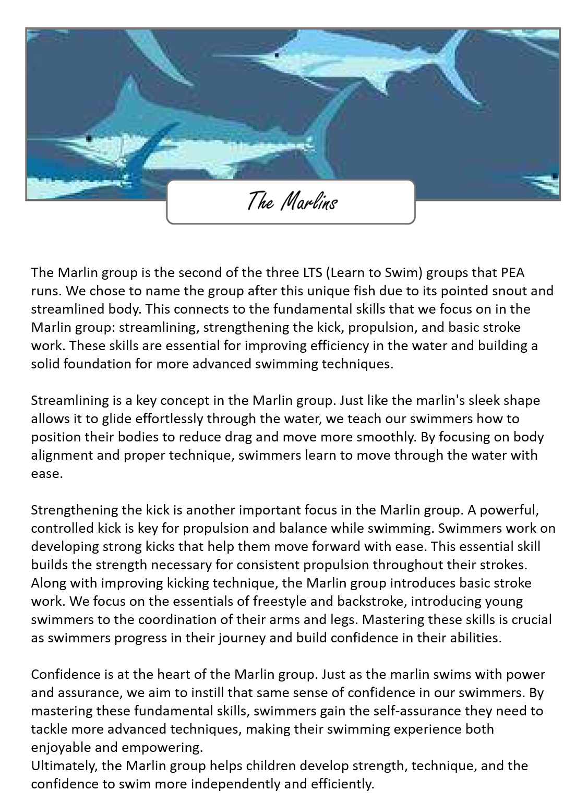
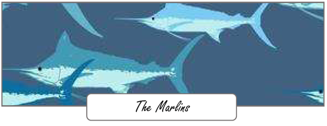

The Marlin group is the second of the three LTS (Learn to Swim) groups that PEA runs. We chose to name the group after this unique fish due to its pointed snout and streamlined body. This connects to our fundamental skills that we focus on in the Marlin group: streamlining, strengthening the kick, propulsion, and basic stroke work. These skills are essential for improving efficiency in the water and building a solid foundation for more advanced swimming techniques.
Streamlining is a key concept in the Marlin group. Just like the marlin's sleek shape allows it to glide effortlessly through the water, we teach our swimmers how to position their bodies to reduce drag and move more smoothly. By focusing on body alignment and proper technique, swimmers learn to move through the water with ease.
Strengthening the kick is another important focus in the Marlin group. A powerful, controlled kick is key for propulsion and balance while swimming. Swimmers work on developing strong kicks that help them move forward with ease. This essential skill builds the strength necessary for consistent propulsion throughout their strokes.
Along with improving kicking technique, the Marlin group introduces basic stroke work. We focus on the essentials of freestyle and backstroke, introducing young swimmers to the coordination of their arms and legs. Mastering these skills is crucial as swimmers progress in their journey and build confidence in their abilities.
Confidence is at the heart of the Marlin group. Just as the marlin swims with power and assurance, we aim to instil that same sense of confidence in our swimmers. By mastering these fundamental skills, swimmers gain the self-assurance they need to tackle more advanced techniques, making their swimming experience both enjoyable and empowering. Ultimately, the Marlin group helps children develop strength, technique, and the confidence to swim more independently and efficiently.
Back